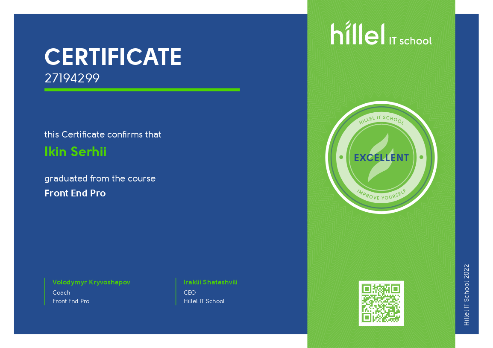
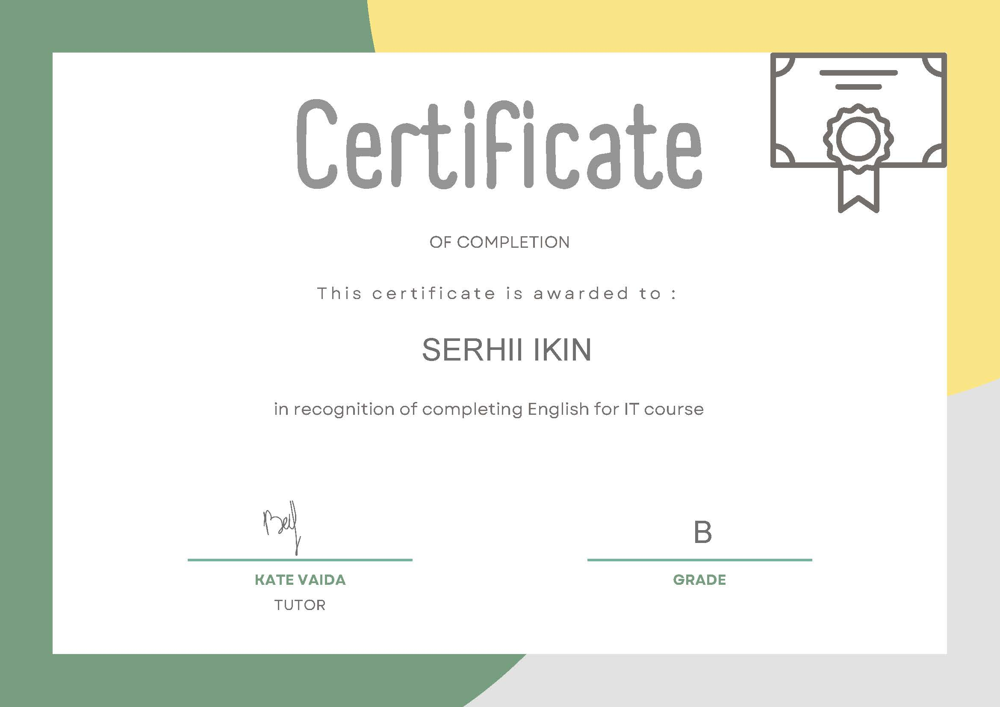

Serhii Ikin
Junior Frontend Udvikler
Kontakter
Resumé:
Jeg afsluttede kurser på Hillel IT - skolen. Fik god viden om HTML, CSS, JavaScript, React.js og en lille smule Node.js. På nævne tid leder efter en position som frontend -udvikler. Det, jeg elsker mest i dette erhverv, er at se på resultatet af mit arbejde, det inspirerer mig til at gøre det bedre og udvikle sig på dette felt.
Mine færdigheder :
- HTML: semantik, specifikation, gummi og adaptivt layout, BEM metodologi
- CSS: flexbox, Grid, Scss, transformationer, overgange, animationer, bootstrap, mui
- Git, Github
- Gulp, Webpack
- RegExp, WebSocket, Cookie, LocalStorage
- Figma, Adobe Photoshop
- JavaScript( primitiver, objekter, arrays, funktioner )
- Færdigheder med at manipulere med DOM træ
- Grundlæggende programmeringsmønstre
- OOP in Javascript
- REST API
- MVC/MVP/MVVM arkitektur
- Bibliotek React for SPA
- Principper for routing på bibliotekets eksempel react-router
- Gem programmets tilstand på eksemplet redux and redux-thunk
Talte sprog
- English (A2,Intermediate)
- Danish (B1,Upper Intermediate)

Erhvervserfaring
Servicearbejde, 5 år, 2010-2015, 6 month, 2016-2017
- Hookah mand
- Doker Pub, Jaguar
Arbejde inden for transporten, 6 år, 2015-2016
- Taxachauffør
Arbejde inden for landbruget, 4.5 år, 2017-2021
- Pig Farm Worker
- Danmark
Uddannelse
- National University of Bioresources and Nature Management, 2008-2014 Fakultet for informationsteknologi(Master)
Yderligere uddannelse, kurser
-
Hillel Course, Frontend Basis (08.07.2021 - 27.09.2021)

-
Hillel Course, Frontend Pro (09.12.2021 -
19.04.2022)

-
Gennemgå fra min lærer fra Frontenden Pro -kursus:
Serhii er den mest ansvarlige og proaktive studerende! Som en del af kurset fattede jeg information så hurtigt som muligt. I løbet af kurset stillede han præcise spørgsmål for at forstå ny information. Gennemførte kurset med den højeste score med succes og tog 1. pladsen i placering
-
Dansk skole, dansk sprog, 2.5 years

-
Engelsk kursus

Der er en mulighed for at hent CV i PDF format.